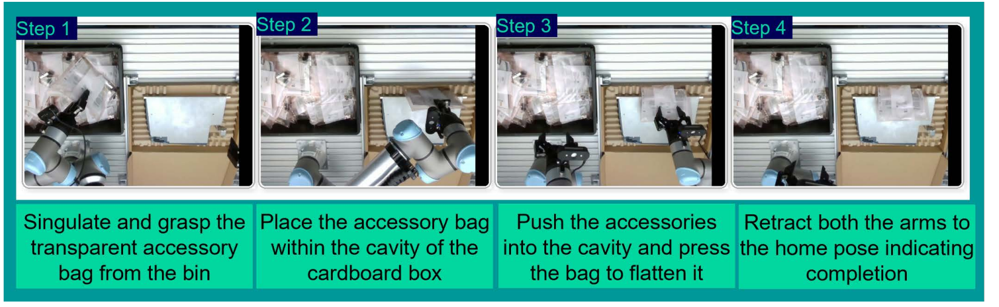
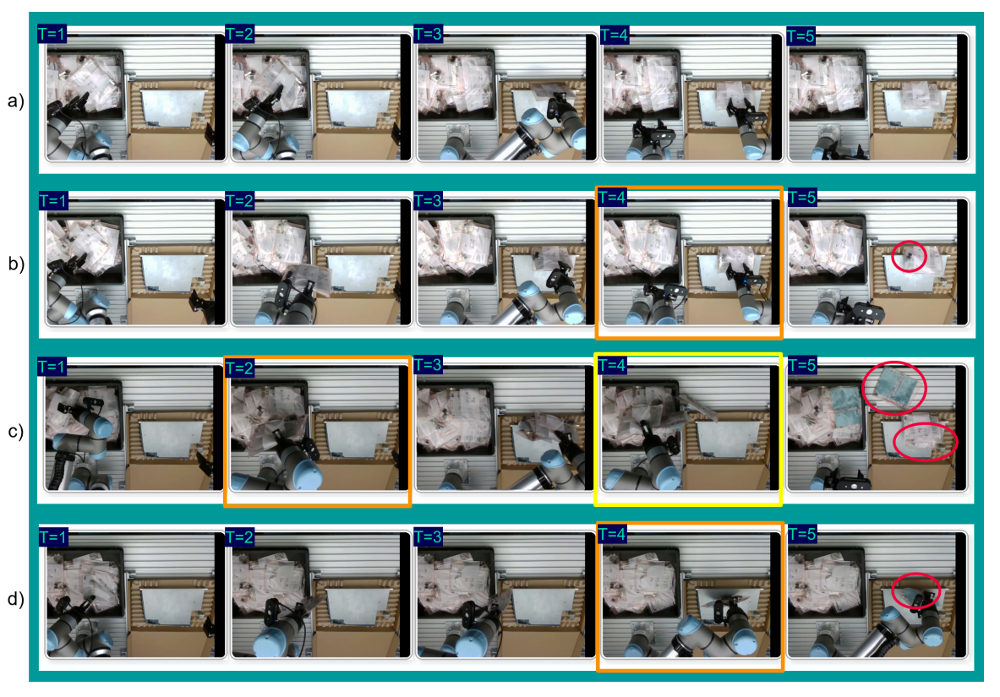

從 pretrained π0.5 到現場任務：部署流程、失敗模式與工程啟示
不是提出新模型，而是揭露一個 pretrained VLA 要進入真實工廠任務時，背後需要多少部署工程。

袋子邊界不清楚，容易一次抓到多袋。
說明書、接頭、線材位置每次不同，影響可抓區域。
不是放進盒子就好，內容物不能高於關盒平面。
雙 UR7e、Robotiq 2F-85、客製 3D 列印 fingertips、固定料箱與紙盒、額外光源。
π0.5 pretrained policy + OpenPI fine-tuning；RTX 5090 IPC 執行 rollout；非同步推論與 real-time action chunking。
示範資料透過 Meta Quest 3 控制 end-effector pose 取得。團隊花大量工程改善遙操作的平順、反應與安全。
資料品質不是只在 dataset，
從控制堆疊就開始。
遙操作延遲與抖動會直接寫進示範軌跡，成為 policy 學到的「錯誤先驗」。
重複、高速、需要記憶「搖了幾次、夠不夠」。VLA 缺少 stateful memory 時難以穩定重現。
需要高靈巧度，也難以透過 teleoperation 穩定示範。
重點不是讓 AI 完全學人，而是重新設計流程，讓任務變得可學、可示範、可驗證。
袋內物件集中一側，形成明顯 empty / filled side。
袋子預先擺成可安全抓取，不要求先翻整。
減少料箱內袋數，降低透明袋重疊與邊界混淆。
| Round | Episodes | 目的 | 訓練設定 |
|---|---|---|---|
| 1 | 693 | 先學 nominal execution | LoRA · 30k steps |
| 2 | 199 | 加入 reposition / correction | LoRA · 30k steps |
| 3 | 1,401 | 接近 production-like setting | Full FT · 60k steps |
Gate：每一輪評估至少 70% success，才進入下一階段難度。
↺ 回到 Curation：形成 failure-driven loop
不是 Collect → Train → Deploy，而是 failure-driven loop。
Trial 1 保留 SP；Trial 2、3 為 fully unconstrained。無論成功或失敗，每袋結束後都會移除，直到料箱清空。
文章將重點放在失敗模式分析，而非宣稱工業任務已穩定完成。
| Failure Type | Overall | 含意 |
|---|---|---|
| Bag contents remain on product | 65% | 觀測不足 ＋ 線材／接頭動態難處理 |
| Multiple bags grasped | 23% | 透明袋邊界辨識失敗 |
| Bag not fully inserted | 15% | 視角遮蔽與上游誤差連鎖 |
| Poor / failed grasps | 15% | 抓取深度、角度、空白區判斷不足 |

(a) 為一次成功的 rollout；(b)–(d) 為最常見的三種失敗模式：
VLA deployment 的瓶頸常在 teleoperation、camera view、hardware morphology、runtime inference、資料治理，而不只是 foundation model。
描述「怎麼學」
從人類示範學習 Observation → Action。ACT、Diffusion Policy 都是典型 task-specific IL policy。
描述「模型吃什麼、輸出什麼」
以視覺 ＋ 語言 ＋ robot state 為條件，直接產生 robot action，並通常追求跨任務泛化。
π0 / π0.5 可以同時是 VLA，也大量使用 Imitation Learning 訓練。
IL / Behavior Cloning
RL / Offline RL
Pretraining ＋ Fine-tuning
State → Action
Vision ＋ State → Action
Vision ＋ Language ＋ State → Action
Direct regression｜Action Chunking
Diffusion｜Flow Matching
Action Tokens
因此「ACT vs π0」不只是模型大小差異，而是 task-specific policy 與 foundation / generalist policy 的不同定位。
| 方法 | 定位 | Language | Pretrained Knowledge | Action 生成 |
|---|---|---|---|---|
| ACT | Task-specific IL | 通常 ✕ | ✕ | Transformer Action Chunk |
| Diffusion Policy | Task-specific IL | 通常 ✕ | ✕ | Diffusion trajectory |
| SmolVLA | Lightweight VLA | ✓ | ✓ | Flow Matching |
| π0 | Foundation VLA | ✓ | ✓ | Flow Matching Action Chunk |
| π0.5 | Generalist VLA | ✓ | ✓ | Flow Matching Action Chunk |
| LeRobot | Framework / Ecosystem | — | — | 可承載多種 policy |
資料蒐集、dataset、訓練、evaluation、robot interface 與 deployment 的開源工具鏈。
真正的 robot foundation policy / VLA 模型。
比較像「PyTorch vs ResNet」：前者是工具鏈，後者才是模型。
研究選型時應比較 ACT / Diffusion Policy / SmolVLA / π0 / π0.5；LeRobot 放在底層實驗平台。
每個新任務主要靠自己的 demonstrations 建立 policy。
希望利用既有語意、視覺與動作 prior，降低新任務學習成本並提高泛化。
真正值得追的 KPI：Foundation VLA 能把 task-specific data ＋ validation 成本降低多少？
工程成本從寫 robot program，轉移成資料、訓練、驗證、失敗修復與 runtime infrastructure。
先做 constrained task ＋ failure taxonomy，再加入變異、recovery、人機介入與自動化評估。
比較對象不是「Programming vs No Programming」，
而是 Explicit Engineering vs Data-driven Engineering。
真正要建立的是：可蒐集、可稽核、可評估、可回復、可持續改善的技能部署流程。
REFERENCES · arXiv:2605.27461 · ACT · Diffusion Policy · Physical Intelligence π0/π0.5 · Hugging Face LeRobot / SmolVLA